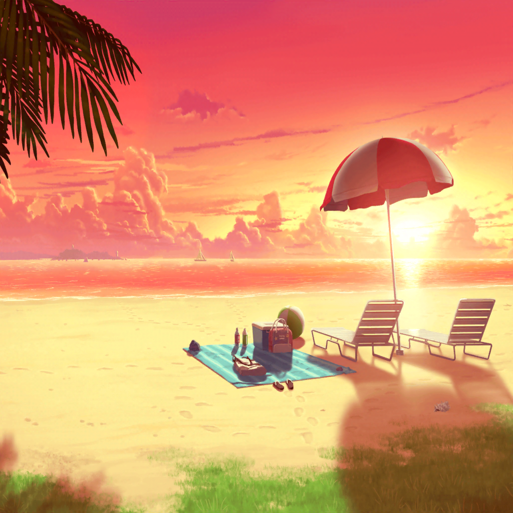

ビーチ
リサ
んん～♪ やっぱり浜辺の散歩は風が気持ちいいね～。
でも、日が落ちると、ちょっと肌寒いかも……
彩
そうだね～。昼間はあんなに暑かったのにね
リサ
せっかく楽しい１日を過ごせたのに、
風邪ひいちゃったらアレだし、そろそろ海の家に戻ろっか？
ジュースでも飲みながら、のんびりしようよ♪
あこ
ジュース！？
さんせー！ りんりん、行こう！
ひまり
あ、待ってあこちゃん！
もう１枚だけ記念写真撮らせて～！

海の家
ひまり
ふわぁ～……
リサ
お、ひまりのあくび見～っけ♪
おっきなお口だったね？
ひまり
リサ先輩！
うぅ、はずかしいとこ見られちゃいました……
リサ
あはは、ごめんごめん。
でも、気持ちはわかるよ？
リサ
海でいっぱい遊んで、
お店のお手伝いして、
今日は１日色んなことあったもんね～
リサ
どうだった、ひまり。念願の海は？
楽しめた？？
ひまり
もちろんですよ！ リサ先輩とあこちゃんと、
水かけ遊びいっぱいできましたし、普段なかなか
お話できない燐子さんや彩さんとも、たくさんお話できましたし！
リサ
そっか。それならよかった♪
ひまり
そういうリサ先輩はどうでしたか？
楽しめました？
リサ
もちろんアタシも楽しかったよ♪
海は、やっぱりいいね～
リサ
それに久しぶりに、たっくさん料理もできたしね☆
あんなにいっぱいつくるのなんて、超レアな体験だったよ～
ひまり
あはは、たしかにいっぺんに４～５人分を
一緒につくる機会なんて、そんなにないですよね？
ひまり
リサ先輩の鍋さばき、すごかったな～。
さりげなく燐子さんのドリンクづくりもフォローしてたし……
ひまり
私、今日の海で、改めてリサ先輩って
すごく素敵な人なんだな～って思いました！
リサ
ど、どうしたの突然？
イヤだな～。そんなこと言われたらテレちゃうよ～
ひまり
さっきのあくびのお返しです♪
というのは、冗談で……
ひまり
私もリサ先輩みたいに、
さりげなく誰かをフォローできるようになりたいな～って
思ったんです
ひまり
なんでか私がそういうことをしようとすると、
空回りしちゃうっていうか、
逆にみんなにフォローされちゃうっていうか……
リサ
あはは、ひまりが言うほどすごくないって。
燐子の時も、ちょうど手が空いたタイミングだったから、
手伝っただけだし……
リサ
最終的には、燐子がすごくテキパキ
ドリンクをつくれるようになって、
アタシ、ついていくのがやっとだったもん♪
リサ
それに、アタシのは、人によってはおせっかいって
取られちゃうこともあるしね。
でも、ありがとう。ひまりにそう言ってもらえてうれしかったよ♪
ひまり
あ、巴も、前に同じようなこと言ってました。
『アタシのフォローはおせっかいなだけだ』って
リサ
へ～、そうなんだ？
もしかしたら、アタシと巴って似たもの同士なのかもね？
今度は巴とも出かけてみたいな〜
ひまり
あ、私も参加したいです！
すっごく楽しそう！
リサ先輩と巴と、どこに行こうかな～？
リサ
ん～、今回が海だったから、次は……山？
ひまり
わぁ、いいですね！
バーベキューとかしちゃいましょうよっ！
リサ
バーベキューなら、
もっと人が多い方がきっと楽しいよ！
Afterglowのみんなでしょ～。あと、友希那と紗夜も……
リサ
もちろんあこ達も来るよね？
……って、あれ？
あこ・燐子
すー……むにゃ……
リサ
あらら、
寝ちゃったみたい
ひまり
燐子さんと、彩さんもぐっすりですね
リサ
ふふ、ご飯食べて、気が抜けちゃったのかもね？
もう少しだけ、休ませてあげよっか
リサ
たしか、バッグに……
ひまり
？ リサ先輩、何をして……
リサ
はい。このタオル、あこの肩にかけてもらってもいい？
パーカーは彩と燐子にかけてあげてっと……
リサ
よし、これで大丈夫かな？
水着のまま寝たら風邪ひいちゃうかもしれないしね
ひまり
……リサ先輩はやっぱりすごいな～。
私、そこまで気が回りませんでした
リサ
あはは、だから、おせっかいなだけだってば～。
ひまりも寒かったら、ちゃんと上着とか着るんだよ？
ひまり
はい！ ふふ、なんだかやさしいお姉さんって感じです♪
リサ
やさしい、か～。……その言葉、
これからのアタシの行動を見ても言えるかな～？
リサ
アタシのワルな部分、見せちゃうよ～？
リサ
ふっふっふ～。
よぉ～く見てなよ～
ひまり
り、リサ先輩？
いったい何をっ……？
リサ
すやすや眠ってるかわいい寝顔は～……こうだっ！
ひまり
あっ！
あこちゃん達の写真を撮って……！？
リサ
だって、見てよ、これ。
ほら、こんなにかわいいんだもん。
これで撮るなって言う方が無理よ～
ひまり
わぁ、ほんとだ～。
みんなかわいい～！
ひまり
私も１枚撮りたいな～。
……あ、そうだ！
どうせ撮るなら記念写真にしちゃおっと♪
リサ
いいね～♪
アタシも入れて入れて！
ひまり
もちろんですよ！
それじゃあ、あこちゃん達の寝顔をバックにして……
リサ
ひまり、もっとこっちに顔を寄せた方がいいんじゃない？
……うん、そうそう♪ それじゃあ……